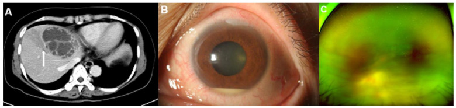
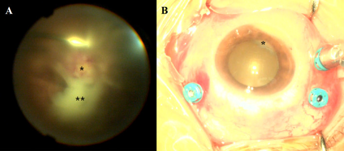
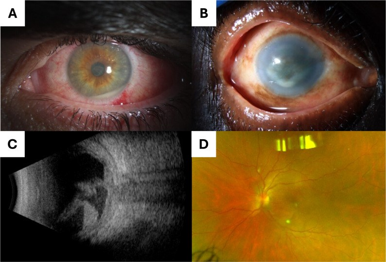
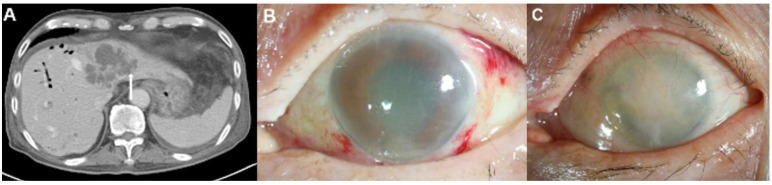

475 — Viêm nội nhãn nội sinh do vi khuẩn: ổ mủ dưới võng mạc & "tiền phòng im lặng" / Endogenous bacterial endophthalmitis
Tags: pattern:viem-noi-nhan pattern:ap-xe-duoi-vong-mac pattern:viet-dich-kinh vung:vong-mac vung:hac-mac vung:gan vung:tim score:OR-CT protocol:soi-day-mat protocol:tiem-noi-nhan protocol:cat-dich-kinh protocol:CT-bung incidentaloma:ap-xe-gan
Mức chắc chắn (certainty): tổng hợp y văn (literature synthesis) — nhóm tự biên từ: đồng thuận Đài Loan 2024 về viêm nội nhãn nội sinh (CC BY-NC 4.0, PMC10776529), nghiên cứu CT dự báo viêm nội nhãn ở áp-xe gan do Klebsiella (CC BY 4.0, PMC9369040), đoàn hệ nội nhãn 14 năm tại Bắc Kinh — 103 ca (CC BY 4.0, PMC13581886), đoàn hệ Đài Bắc 2025 — 91 ca (CC BY-NC-SA 4.0, PMC12204661), đoàn hệ Bascom Palmer 2026 — 41 ca (CC BY 4.0, PMC13447657), phân tích cơ sở dữ liệu viêm nội tâm mạc — 769.472 ca nhập viện (PMC11733160), tổng quan chẩn đoán–điều trị Sadiq 2015 (CC BY 4.0, PMC4630262).
Vì sao bài này quan trọng: bài 463 đã dạy nấm nội sinh, và trong bảng giả danh của 463, vi khuẩn nội sinh chỉ là một hàng. Nhưng đây là bệnh cảnh ngược hoàn toàn về nhịp độ: nấm tiến triển nhiều ngày–tuần, phần lớn không triệu chứng; vi khuẩn (nhất là Klebsiella) phá hủy tế bào cảm thụ ánh sáng trong 48 giờ (mô hình thỏ) và có thể dẫn tới evisceration/enucleation 41%, thị lực ≤ đếm ngón tay/LP ở 89% (tổng hợp của Yang, dẫn qua Lee JJ 2022). Với bác sĩ CĐHA, điểm vào lại không nằm ở mắt: một áp-xe gan "trông bình thường" trên CT là nơi dự báo được ai sẽ mất mắt — can thiệp mạch máu lân cận của ổ áp-xe làm tăng nguy cơ viêm nội nhãn OR 148 (Lee JJ 2022). Đọc đúng dấu hiệu CT đó = gọi mắt khám trước khi bệnh nhân kịp kêu mờ mắt.
1. Tổng quan bệnh học – cơ chế hình ảnh – vì sao CT bụng lại quyết định
- Đường đi (pathway) của vi khuẩn tới mắt: hắc mạc có lưu lượng máu rất cao và mao mạch hắc mạc có lỗ cửa sổ (fenestrated choriocapillaris) → vi khuẩn trong máu dễ lắng tại hắc mạc. Ban đầu biểu mô sắc tố võng mạc (RPE) + màng Bruch còn hàng rào, tổn thương là viêm hắc mạc dẹt (flat choroiditis); khi hàng rào vỡ → ổ mủ dưới võng mạc (subretinal abscess) → viêm dịch kính (vitritis) → mủ tiền phòng (hypopyon). Đây là lý do tổn thương sớm nhất luôn nằm SÂU (hắc mạc/dưới võng mạc) và tiền phòng có thể còn trong khi hậu cực đã mủ đặc.
- Vì sao dịch kính là "buồng nuôi cấy": dịch kính là gel vô mạch, không có hệ miễn dịch tại chỗ, thể tích ~4 mL người lớn; vi khuẩn vào đây nhân lên không bị cản và kháng sinh toàn thân khó thấm (hàng rào máu–dịch kính) → giải thích tại sao phải tiêm nội nhãn, không thể chỉ truyền tĩnh mạch.
- Vì sao Klebsiella dữ dội hơn: K. pneumoniae tạo màng sinh học (biofilm) giàu polysaccharide chống thực bào của đại thực bào/bạch cầu trung tính, xuyên qua hàng rào máu–mắt; thể tăng độc lực (hypervirulent, hvKP) mang kiểu hình niêm dịch quánh (hypermucoviscous). Trong đoàn hệ phía Đông Bắc Trung Quốc 2026, 81,8% ca cấy dương là K. pneumoniae, trong đó 82,5% là hvKP, ưu thế dòng ST23-K1 (PMC13581886). Thực nghiệm trên thỏ: tổn thương tế bào cảm thụ ánh sáng không hồi phục trong 48 giờ (dẫn qua Lee JJ 2022).
- Ngưỡng định lượng nằm lòng (dùng để phân tầng nguy cơ):
- Áp-xe gan do K. pneumoniae → viêm nội nhãn: 0,005%–1,92% tùy loạt; tại Đài Loan, cơ sở dữ liệu toàn quốc ghi 0,9–1,36% (Lee CY 2024; Lee JJ 2022).
- Viêm nội tâm mạc nhiễm khuẩn (infective endocarditis) → viêm nội nhãn: 2.248/769.472 ca nhập viện = 0,29%; đái tháo đường OR 2,04, rối loạn do rượu OR 1,80, xơ gan OR 1,45, nhóm 21–64 tuổi OR 3,66 so với ≤ 20 tuổi; có dụng cụ tim (cardiac device) lại GIẢM nguy cơ OR 0,34 (Shah MK 2025).
- Cơ cấu tác nhân (châu Á): tại Đài Loan 78–91% viêm nội nhãn nội sinh cấy dương là vi khuẩn, K. pneumoniae 34–53% — cao hơn hẳn các loạt phương Tây (Lee CY 2024). Đài Bắc 2025 (91 bệnh nhân): vi khuẩn 61,5%, nấm 27,5% (Chuang YH 2025).
- Ổ nhiễm ngoài mắt: áp-xe gan là ổ thường nhất (Đài Loan); 63,1% ca Trung Quốc có ổ ngoài mắt, áp-xe gan 45,0% (PMC13581886).
- Biểu hiện lúc vào viện (Bascom Palmer 2026, 41 bệnh nhân/50 mắt): 73% đến từ phòng khám (không phải đang nằm điều trị nhiễm trùng), 88% mờ mắt, chỉ 39% có triệu chứng toàn thân, trung vị 11 ngày từ lúc có triệu chứng mắt tới lúc điều trị, cấy máu dương 56%, tử vong do nhiễm trùng 7% (so với 29–50% ở các loạt cũ), evisceration 4%, 52% đạt ≥ 20/400 (Zhang C 2026).
- TẠI SAO "tiền phòng im lặng" lại là dấu hiệu hình ảnh quan trọng: vì phản ứng tiền phòng không tỉ lệ với mức phá hủy hậu cực. Đồng thuận Đài Loan minh họa đúng ca áp-xe gan do Klebsiella: hậu cực viêm dịch kính đặc + ổ mủ dưới hoàng điểm lan rộng + bao mạch võng mạc, trong khi tiền phòng chỉ hypopyon nhẹ (PMC10776529, Fig. 1). Hệ quả thực hành: không được dùng "tiền phòng sạch" để loại trừ, và phải soi đáy mắt giãn đồng tử — một việc mà ảnh CT không làm thay được.
2. Mẫu hình + chẩn đoán phân biệt theo vị trí (gamut)
Câu hỏi lọc: "Bệnh nhân đái tháo đường, đang/đã có áp-xe gan hoặc nhiễm khuẩn huyết, mờ mắt một bên tiến triển trong 1–3 ngày — có phải viêm nội nhãn nội sinh do vi khuẩn không?" → soi đáy mắt giãn đồng tử ngay, không chờ cấy.
Gamut theo ổ nhiễm ngoài mắt (nguồn lây) — gợi nhớ LUCID (nhóm biên soạn tự đặt):
- L — Liver (gan/đường mật): áp-xe gan do K. pneumoniae (châu Á, hvKP), đường mật, sau thủ thuật gan. Tần suất cao nhất.
- U — Urinary (đường niệu): E. coli, K. pneumoniae; đồng thuận Đài Loan ghi nhận xu hướng tăng ở nữ cao tuổi không đái tháo đường với ổ nguyên nhân đường niệu (PMC10776529).
- C — Cardiac (tim): viêm nội tâm mạc — S. aureus, Streptococcus; nguy cơ 0,29%, đái tháo đường/rượu/xơ gan làm tăng (Shah MK 2025).
- I — IV line / IVDU (đường truyền, tiêm chích): S. aureus (kể cả MRSA), tụ cầu coagulase âm; catheter là nguồn thường nhất ở loạt Mỹ (30% các ca tìm được ổ); 17% ca có tiêm chích ma túy (Zhang C 2026).
- D — Dental / Device (răng, dụng cụ cấy): ổ răng hàm mặt, shunt, van tim nhân tạo, máy tạo nhịp.
Gamut theo vị trí tổn thương trong mắt:
- Hắc mạc/dưới võng mạc: ổ mủ dưới võng mạc (subretinal abscess) — dấu hiệu đặc trưng nhất của vi khuẩn nội sinh, hay gặp Klebsiella; phân biệt với ổ chorioretinitis nhỏ, vàng–kem, đơn độc của Candida (bài 463).
- Dịch kính: viêm dịch kính mủ đặc, màng/fibrin; phân biệt với xuất huyết dịch kính (không sốt, không mủ tiền phòng) và viêm dịch kính do nấm (chậm hơn, "fluff ball").
- Tiền phòng: hypopyon, fibrin, dính mống mắt — hypopyon nhiều gợi ý vi khuẩn/nấm mốc hơn nấm men.
- Toàn nhãn (panophthalmitis) / hốc mắt: phù mi, lồi mắt, hạn chế vận nhãn → nguy cơ mất nhãn cầu, cần cắt dịch kính ± evisceration.
- Mắt đối diện: gặp ở một tỉ lệ đáng kể; hai mắt nhiều hơn ở thể nấm (Chuang YH 2025) → luôn soi cả hai mắt.
3. Bảng so sánh phân biệt (ma trận đối chiếu)
| Thực thể (entity) | Hình ảnh điển hình (đáy mắt / OCT / B-scan / CT) | Chốt vào (rule-in) | Chốt loại (rule-out) | Gợi ý xác nhận |
|---|---|---|---|---|
| Viêm nội nhãn nội sinh do Klebsiella (áp-xe gan) | Ổ mủ dưới võng mạc lớn, vàng–trắng, bờ mờ, viêm dịch kính nhanh, tiền phòng có thể chỉ hypopyon nhẹ; CT: áp-xe gan thùy trái/hai thùy, xâm lấn tĩnh mạch gan/cửa | Đái tháo đường + áp-xe gan + mờ mắt giờ–ngày; CT có xâm lấn mạch lân cận (OR 148) | Không sốt, không ổ ngoài mắt, tiến triển tuần → nghĩ nấm (463) hoặc masquerade | Cấy máu (2 bộ) + cấy dịch kính; tiêm nội nhãn ngay, không chờ |
| Viêm nội nhãn nội sinh do Gram dương (S. aureus / Streptococcus) | Tổn thương hậu cực + mủ tiền phòng sớm, có thể mảng trắng võng mạc; bối cảnh catheter/van tim/tiêm chích | Van tim nhân tạo/máy tạo nhịp/catheter + sốt + mờ mắt; cấy máu dương | Không có ổ nhiễm, hai mắt, chậm → nghĩ nấm/viêm | Siêu âm tim (TTE/TEE), cấy máu, cấy dịch kính |
| Viêm nội nhãn nội sinh do nấm (Candida/Aspergillus — bài 463) | "Fluff ball"/"chuỗi ngọc trai"/"quả cầu tuyết", ổ vàng–kem nhỏ, viêm dịch kính nhẹ–trung bình; phần lớn KHÔNG triệu chứng | Candidemia/catheter/TPN/ICU/giảm bạch cầu hạt + tổn thương ở người không kêu mắt | Tiến triển giờ–ngày + ổ mủ dưới võng mạc lớn + áp-xe gan → nghĩ vi khuẩn | Cấy/PCR dịch kính, β-D-glucan, galactomannan |
| Viêm nội nhãn NGOẠI SINH (sau mổ đục thủy tinh thể/tiêm nội nhãn) | Viêm tiền phòng nổi bật, mủ quanh IOL, đau nhiều; khởi phát 3–7 ngày sau thủ thuật | Tiền sử mổ/tiêm trong 6 tháng + đau + mủ tiền phòng | Không tiền sử thủ thuật; có ổ nhiễm toàn thân → nghĩ nội sinh | Cấy dịch tiền phòng/dịch kính; so sánh bài 463 (nội sinh) |
| U lympho nội nhãn (PVRL — bài 462) | Ổ vàng–kem dưới biểu mô sắc tố (sub-RPE), viêm dịch kính nghèo, người > 60 tuổi | Tái phát sau corticoid + tổn thương dưới RPE + IL-10/IL-6 > 1 | Sốt + ổ nhiễm ngoài mắt + tiến triển giờ–ngày → không phải u lympho | IL-10/IL-6 dịch kính, MYD88 L265P |
| Hoại tử võng mạc cấp (ARN) / CMV retinitis (bài 452) | Hoại tử dọc mạch + xuất huyết ("bánh pizza"), viêm dịch kính ít; HIV CD4 < 50 | HIV + tổn thương dọc mạch, đau nhẹ | Ổ mủ dưới võng mạc + hypopyon + nhiễm khuẩn huyết → nghĩ vi khuẩn | PCR dịch tiền phòng/dịch kính |

(A) CT bụng có cản quang: nang dạng vách 7,5 cm ở phân thùy IV — áp-xe gan do Klebsiella — kèm viêm tắc tĩnh mạch gan lân cận do xâm lấn trực tiếp (mũi tên). (B) Sinh hiển vi đèn khe: hypopyon chỉ 2 mm — phản ứng tiền phòng "nhẹ" không tương xứng với hậu cực. (C) Đáy mắt góc rộng: khối trắng nghi ổ mủ dưới võng mạc. Ba ảnh của cùng một bệnh nhân nữ 59 tuổi đái tháo đường. Nguồn: Lee JJ et al., J Clin Med 2022 (PMC9369040) Fig. 2, CC BY 4.0.Dấu hiệu phải đọc đúng tên
- Ổ mủ dưới võng mạc (subretinal abscess): khối vàng–trắng nằm dưới võng mạc, trên hắc mạc, che mạch máu võng mạc — khác ổ chorioretinitis nông của nấm và khác bong võng mạc tiết dịch (không có khối đặc).
- Viêm tắc tĩnh mạch gan lân cận (adjacent hepatic/portal vein thrombophlebitis): trên CT là khuyết thuốc trong lòng tĩnh mạch gan/cửa sát ổ áp-xe — đây không phải chi tiết phụ: chính nó là dấu hiệu dự báo di căn nhiễm trùng, với OR 148,1 trong phân tích đa biến (Lee JJ 2022).
- "Tiền phòng im lặng" (quiet anterior segment): hypopyon ít/không có dù hậu cực mủ đặc — dấu hiệu bẫy, đã được đồng thuận Đài Loan nêu riêng (PMC10776529).
4. Protocol chụp/xét nghiệm + sơ đồ quyết định + phác đồ
Bước 1 — Mắt (không xâm lấn, làm trong 24 giờ):
- Soi đáy mắt giãn đồng tử: khuyến cáo cho MỌI bệnh nhân áp-xe gan do vi khuẩn (khuyến cáo của đồng thuận Đài Loan; lý do: 0,9–1,36% sẽ viêm nội nhãn và diễn tiến tối cấp).
- Chụp đáy mắt góc rộng (ultra-widefield) + OCT (đo chiều cao ổ mủ, xác định tổn thương dưới võng mạc hay trong võng mạc, theo dõi đáp ứng).
- Siêu âm B-scan 10–20 MHz khi không thấy đáy mắt (mủ dịch kính, phù giác mạc): đánh giá độ đặc dịch kính, màng, bong võng mạc, dày hắc mạc — nhưng B-scan KHÔNG phân biệt được mủ với máu, nên không dùng một mình để chốt.
Bước 2 — CT bụng (nơi bác sĩ CĐHA tạo ra giá trị):
- CT bụng có cản quang thì tĩnh mạch cửa (lát ≤ 5 mm) khi nghi áp-xe gan; đọc và ghi rõ 3 biến số dự báo:
| Biến số trên CT (áp-xe gan do K. pneumoniae) | Tần suất ở nhóm có viêm nội nhãn | OR đa biến | Ý nghĩa thực hành |
|---|---|---|---|
| Áp-xe thùy TRÁI | 53,3% (nhóm không viêm nội nhãn: thùy phải 68,7%) | 19,6 | Ghi vị trí theo phân thùy, không chỉ "áp-xe gan" |
| Áp-xe HAI thùy | — | 45,1 | Càng nhiều thùy càng nguy cơ |
| Xâm lấn mạch lân cận (tĩnh mạch gan/cửa) | phổ biến hơn rõ rệt (p < 0,001) | 148,1 | Dấu hiệu mạnh nhất — phải chủ động tìm |
| Đái tháo đường (lâm sàng) | 66,7% nhóm có viêm nội nhãn | 11,6 | Đưa vào phần kết luận của báo cáo |
| Kích thước > 5 cm / nhiều ổ | Không khác biệt có ý nghĩa | — | Không dùng để phân tầng |
- Toàn bộ 15/15 ca viêm nội nhãn trong loạt này thỏa ít nhất một trong hai điều kiện: áp-xe > 5 cm hoặc có xâm lấn mạch lân cận — nên đây là bộ lọc âm tính hữu ích: áp-xe nhỏ, không xâm lấn mạch, thùy phải → nguy cơ thấp (nhưng không thay thế việc soi đáy mắt). Độ đồng thuận giữa hai bác sĩ CĐHA cho dấu hiệu xâm lấn mạch kappa 0,872 — nghĩa là hễ chủ động tìm thì tìm được (Lee JJ 2022).
Bước 3 — Toàn thân & vi sinh:
- 2 bộ cấy máu TRƯỚC kháng sinh (chỉ 56% dương trong loạt Bascom — âm tính không loại trừ), cấy nước tiểu, cấy dịch kính/dịch tiền phòng.
- Siêu âm tim (TTE, chuyển TEE nếu nghi) khi có bệnh cảnh nhiễm khuẩn huyết không rõ ổ; khám răng hàm mặt, gỡ/đổi catheter nếu nghi nguồn đường truyền.
- Dẫn lưu ổ nguyên nhân (áp-xe gan) là một phần của điều trị, không chỉ là chẩn đoán.
Bước 4 — Điều trị (chốt định lượng):
- Tiêm nội nhãn ngay khi nghi (không chờ cấy): vancomycin 1 mg/0,1 mL + ceftazidime 2,25 mg/0,1 mL (hoặc amikacin 0,4 mg/0,1 mL) — phổ Gram dương + Gram âm (Sadiq MA 2015, PMC4630262).
- Cắt dịch kính (pars plana vitrectomy) khi: (1) viêm dịch kính tiến triển hoặc thị lực xấu đi sau 24 giờ dù đã kháng sinh toàn thân ± tiêm nội nhãn; (2) viêm dịch kính đặc che đĩa thị và cung mạch ngay lần khám đầu (khuyến cáo của đồng thuận Đài Loan, PMC10776529).
- Kháng sinh toàn thân có thấm tốt dịch kính (ceftriaxone, moxifloxacin) — luôn phối hợp vì ổ ngoài mắt là nguồn liên tục; thời gian 2–4 tuần tĩnh mạch tùy ổ nguyên nhân, sau đó uống.
- Corticoid nội nhãn: không dùng thường quy khi chưa loại trừ nấm (nguy cơ bùng phát — xem bài 463).
- Tiêm nội nhãn là yếu tố bảo vệ độc lập: trong đoàn hệ Trung Quốc 103 ca, tiêm nội nhãn giảm nguy cơ kết cục thị lực xấu với RR 0,061 (95% CI 0,005–0,442) (PMC13581886). Chậm tiêm = mất mắt.
flowchart TD
A[Ap-xe gan do Klebsiella tren CT] --> B{Co xam lan tinh mach gan/cua<br/>hoac ap-xe > 5 cm<br/>hoac thu y trai/hai thuy?}
B -->|Khong| C[Nguy co thap: van soi day mat trong 24 gio<br/>va theo doi trieu chung mat]
B -->|Co| D[Soi day mat gian dong tu NGAY<br/>+ chup goc rong + OCT]
D --> E{Thay o mu duoi vong mac<br/>hoac viem dich kinh?}
E -->|Khong| F[Soi lai moi 24-48 gio khi con nhap vien<br/>canh bao benh nhan bao ngay khi mo mat]
E -->|Co| G[Cay mau 2 bo + cay dich kinh<br/>Tiem noi nhan vancomycin 1 mg + ceftazidime 2,25 mg]
G --> H[Khang sinh toan than tham dich kinh<br/>Dan luu ap-xe gan + go catheter neu co]
H --> I{Sau 24 gio: viem dich kinh tang<br/>hoac thi luc xau di?}
I -->|Co| J[Cat dich kinh + tiem lai khang sinh<br/>gui dich kinh soi/cay/PCR]
I -->|Khong| K[Theo doi OCT/B-scan dinh ky<br/>khang sinh 2-4 tuan theo o nguyen nhan]
J --> K
5. Biến thể bình thường và cạm bẫy
- Bẫy số 1 — "tiền phòng sạch": hypopyon nhẹ hoặc không có trong khi hậu cực đã mủ đặc (đồng thuận Đài Loan nêu riêng). Không bao giờ dùng tình trạng tiền phòng để quyết định không soi đáy mắt.
- Bẫy số 2 — "bệnh nhân không kêu mắt": 73% ca Bascom đến từ phòng khám vì triệu chứng mắt, nhưng chỉ 39% có triệu chứng toàn thân; ở chiều ngược lại, bệnh nhân đang nằm ICU vì áp-xe gan có thể không phản ánh được. Với người bệnh không giao tiếp được (an thần, sa sút trí tuệ), soi đáy mắt theo chỉ định CT là cách duy nhất.
- Bẫy số 3 — đọc B-scan quá tự tin: mủ dịch kính và xuất huyết dịch kính đều là "echo dày"; B-scan không phân biệt được. Chỉ dùng B-scan để đếm/loại bong võng mạc và màng; chẩn đoán mủ dựa vào bối cảnh + đáy mắt/CT.
- Bẫy số 4 — chờ cấy: cấy máu chỉ dương 56%, cấy dịch kính cũng có thể âm → âm tính không loại trừ; đồng thuận Đài Loan: tiêm nội nhãn ngay, không chờ.
- Bẫy số 5 — Klebsiella "string test" âm: xét nghiệm kéo sợi (string test) âm không loại trừ hvKP (PMC13581886) — đừng vì thế mà hạ mức cảnh giác.
- Bẫy số 6 — nhầm ổ áp-xe gan với u hoại tử: khối dạng vách, có khí trong, viêm tắc tĩnh mạch lân cận, bối cảnh sốt + đái tháo đường → áp-xe; u hoại tử thường có thành dày không đều, không khí trong, có thì động mạch đặc trưng. Đọc thì tĩnh mạch cửa để thấy rõ vách và tĩnh mạch.
- Bẫy số 7 — gộp vi khuẩn vào nấm: bệnh nhân đái tháo đường có áp-xe gan không đồng nghĩa nấm; và bệnh nhân có candidemia vẫn có thể đồng nhiễm vi khuẩn. Điều trị theo cấy + bối cảnh, không theo "trường phái".
- Bẫy số 8 — bỏ sót mắt thứ hai: hai mắt gặp ở một tỉ lệ đáng kể (nhiều hơn ở thể nấm); luôn soi cả hai mắt, kể cả khi bệnh nhân chỉ kêu một bên.
6. Tự lượng giá — Blind Quiz
Ca 1 — Nữ 59 tuổi, đái tháo đường, sốt 5 ngày, đau hạ sườn trái; CT bụng có cản quang (A). Mắt phải: mờ nhẹ, tiền phòng chỉ "hơi đục" (B), đáy mắt (C):
- Hỏi: (1) mô tả ổ áp-xe và dấu hiệu mũi tên trên CT; (2) vì sao tiền phòng "nhẹ" mà vẫn phải coi là cấp cứu; (3) dấu hiệu CT nào dự báo nguy cơ viêm nội nhãn mạnh nhất?
Bấm để hiện đáp án (findings + chẩn đoán)
- Findings: (A) nang dạng vách 7,5 cm ở phân thùy IV, kèm khuyết thuốc trong tĩnh mạch gan lân cận (mũi tên) = viêm tắc tĩnh mạch do xâm lấn trực tiếp; (B) hypopyon 2 mm + sung huyết; (C) khối trắng nghi ổ mủ dưới võng mạc, đáy mắt mờ.
- Chẩn đoán: viêm nội nhãn nội sinh do K. pneumoniae từ áp-xe gan.
- Vì sao "nhẹ" vẫn cấp cứu: phản ứng tiền phòng không tỉ lệ với tổn thương hậu cực; mô hình thỏ cho thấy tế bào cảm thụ ánh sáng bị phá hủy không hồi phục trong 48 giờ.
- Dấu hiệu mạnh nhất: xâm lấn mạch lân cận — OR 148,1 (đa biến); sau đó hai thùy OR 45,1, thùy trái OR 19,6, đái tháo đường OR 11,6.
- Nguồn ảnh: Lee JJ et al., J Clin Med 2022 (PMC9369040) Fig. 2, CC BY 4.0.
Ca 2 — Cùng bối cảnh áp-xe gan do Klebsiella: so sánh TIỀN PHÒNG (B) và HẬU CỰC (A):

- Hỏi: mô tả (A) và (B). Sự "lệch pha" này dạy điều gì về thứ tự thăm khám?
Bấm để hiện đáp án (findings + chẩn đoán)
- (A) Hậu cực: viêm dịch kính đặc (**), ổ mủ dưới hoàng điểm lớn (*), bao mạch võng mạc lan tỏa.
- (B) Tiền phòng: chỉ hypopyon nhẹ (*) — hoàn toàn không tương xứng.
- Bài học: thứ tự đúng là soi đáy mắt TRƯỚC khi kết luận; một "tiền phòng nhẹ" không hạ thấp mức độ cấp cứu, và OCT/B-scan giúp định lượng tổn thương sau.
- Nguồn ảnh: Lee CY et al., Ophthalmol Ther 2024 (PMC10776529) Fig. 1, CC BY-NC 4.0 — giữ nguyên bản.
Ca 3 — Bốn bệnh cảnh viêm nội nhãn nội sinh: (A) hypopyon, (B) thâm nhiễm giác mạc + fibrin tiền phòng, (C) siêu âm B-scan, (D) đáy mắt góc rộng:

- Hỏi: (1) B-scan (C) cho thấy gì và không cho thấy gì? (2) Ảnh nào gợi ý tác nhân nấm hơn vi khuẩn? (3) Nếu chỉ có B-scan, có chốt được "mủ" không?
Bấm để hiện đáp án (findings + chẩn đoán)
- (A) nam 40 tuổi, hypopyon + sung huyết kết mạc, viêm nội nhãn nội sinh do tụ cầu vàng (S. aureus) từ nhiễm khuẩn đường niệu có catheter.
- (B) nữ 79 tuổi, thâm nhiễm giác mạc + fibrin tiền phòng, viêm nội nhãn nội sinh do K. pneumoniae từ áp-xe mô mềm.
- (C) B-scan: viêm dịch kính đặc, màng dày, dày hắc mạc–võng mạc, bong hắc mạc nông — nhưng không phân biệt được mủ với máu.
- (D) nữ 31 tuổi, tiêm chích ma túy, ảnh giả màu góc rộng: thâm nhiễm võng mạc hai mắt (trái > phải) — cấy ra Candida albicans; đây là bệnh cảnh nấm, tiến triển chậm hơn.
- Nguồn ảnh: Zhang C et al., J Ophthalmic Inflamm Infect 2026 (PMC13447657) Fig. 1, CC BY 4.0.
Ca 4 — Nam 87 tuổi, đái tháo đường, xơ gan mật do viêm đường mật tái diễn; CT (A) và mắt sau điều trị (B, C):

- Hỏi: vì sao ca này nguy cơ cao hơn ca 1? Kết cục (C) nói lên điều gì về giá trị của chẩn đoán sớm?
Bấm để hiện đáp án (findings + chẩn đoán)
- (A) nang dạng vách 6,8 cm ở phân thùy II và IV (hai thùy) + xâm lấn tĩnh mạch gan lân cận (mũi tên) → hội đủ hai yếu tố dự báo mạnh nhất (hai thùy OR 45,1; xâm lấn mạch OR 148,1), cộng đái tháo đường OR 11,6.
- (B) phù giác mạc nặng + tiền phòng đục; (C) phthisis bulbi — mắt teo, mất chức năng, dù đã điều trị tích cực.
- Bài học: Klebsiella nội sinh có thể mất mắt trong vài ngày; không có "thời gian chờ đợi hợp lý". Với bác sĩ CĐHA: nhìn thấy áp-xe hai thùy/xâm lấn mạch = đề nghị soi đáy mắt ngay hôm nay.
- Nguồn ảnh: Lee JJ et al., J Clin Med 2022 (PMC9369040) Fig. 3, CC BY 4.0.
Bài liên quan chéo
- 400 – Tổng quan Mắt & thị giác
- 463 – Viêm nội nhãn nội sinh do nấm (Candida/Aspergillus) (đối chiếu nhịp độ: tuần vs giờ)
- 474 – Kháng nấm nội nhãn: chọn thuốc theo loài (khi tác nhân là nấm)
- 462 – U lympho nội nhãn (PVRL) vs viêm màng bồ đào giả danh (masquerade)
- 452 – Hoại tử võng mạc cấp (ARN) & CMV retinitis
- 449 – Chấn thương mắt & dị vật nội nhãn (phân biệt nội sinh vs ngoại sinh)
- 459 – Theo dõi dài hạn CMV retinitis
- 161 – Viêm ruột thừa cấp: ổ nhiễm trong bụng & phân tầng điều trị (bối cảnh ổ nhiễm ngoài mắt)
Ảnh
475_ap-xe-gan-hypopyon-day-mat_Fundus-CT_PMC9369040-Fig2-CCBY.jpg— Lee JJ et al., J Clin Med 2022 (PMC9369040) Fig. 2, CC BY 4.0.475_ap-xe-hai-thuy-va-phthisis_Fundus-CT_PMC9369040-Fig3-CCBY.jpg— Lee JJ et al. (PMC9369040) Fig. 3, CC BY 4.0.475_tien-phong-im-lang_Fundus_PMC10776529-Fig1-CCBYNC.jpg— Lee CY et al., Ophthalmol Ther 2024 (PMC10776529) Fig. 1, CC BY-NC 4.0 (giữ nguyên bản).475_bon-benh-canh_Fundus_PMC13447657-Fig1-CCBY.jpg— Zhang C et al., J Ophthalmic Inflamm Infect 2026 (PMC13447657) Fig. 1, CC BY 4.0.- Chi tiết giấy phép từng ảnh trong
images/CREDITS.md. AuntMinnie/Retina Image Bank: chỉ dẫn link, không tải.
Không dùng để chẩn đoán độc lập khi chưa có người hướng dẫn.